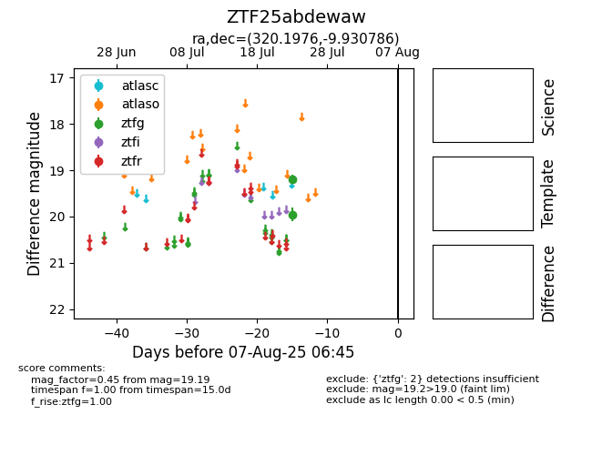

Target ZTF25abdewaw at 2025-08-07 07:30, see:
FINK: fink-portal.org/ZTF25abdewaw
Lasair: lasair-ztf.lsst.ac.uk/objects/ZTF25abdewaw
ALeRCE: alerce.online/object/ZTF25abdewaw
alt names
ZTF25abdewaw (ztf,fink)
coordinates:
equatorial (ra, dec) = (320.1976,-9.93079)
galactic (l, b) = (41.5671,-37.61440)
photometry
last ztfg=19.19
2 ztfg detections
